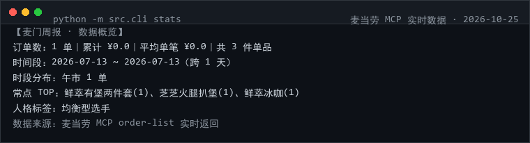

下面是真实生成的一份年报（使用仓库内 samples/ 的 16 单脱敏样例数据渲染）。
配置 Token 后同样的命令会换成你自己的真实订单。

git clone https://github.com/susevenci/mcd-moments.git cd mcd-moments # 零依赖，Python 3.8+，无需 pip install python -m src.cli stats --offline python -m src.cli build --title "2026 我的麦门年报" --out output/mcd-moments.html
不配 Token 也能跑：--offline 用仓库内脱敏样例即可验证全部逻辑。